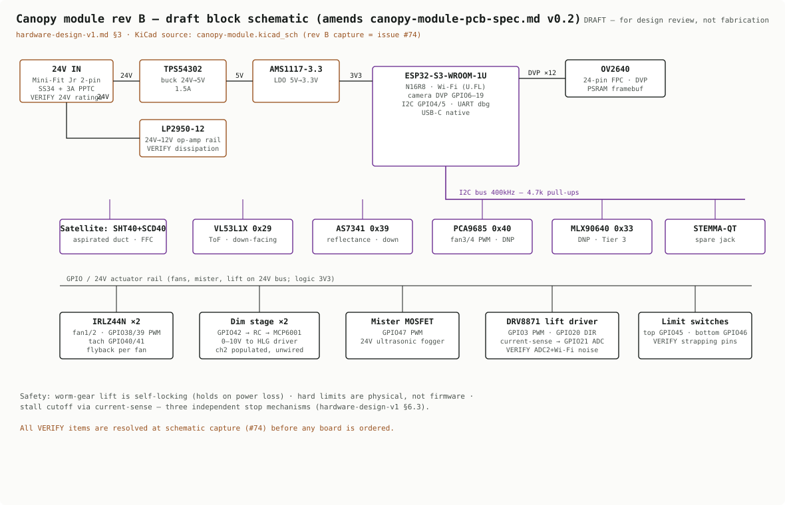
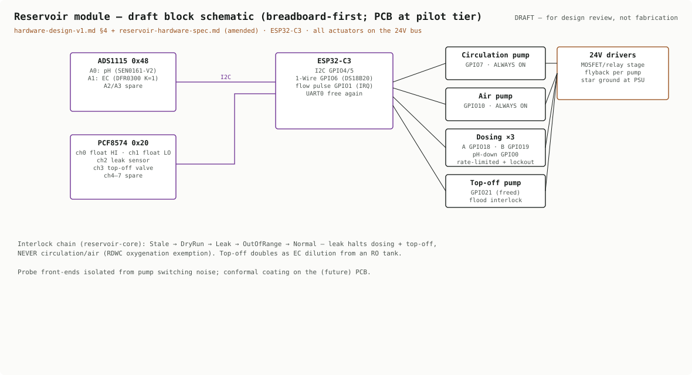
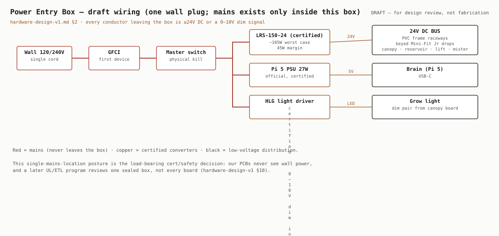
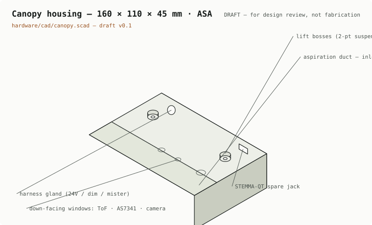
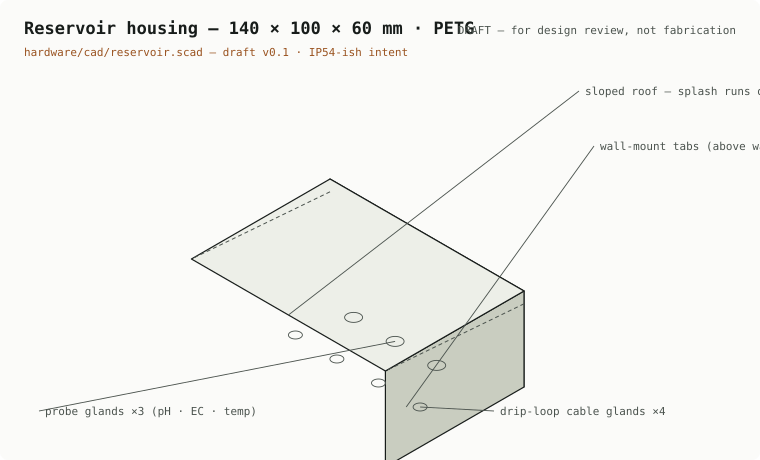
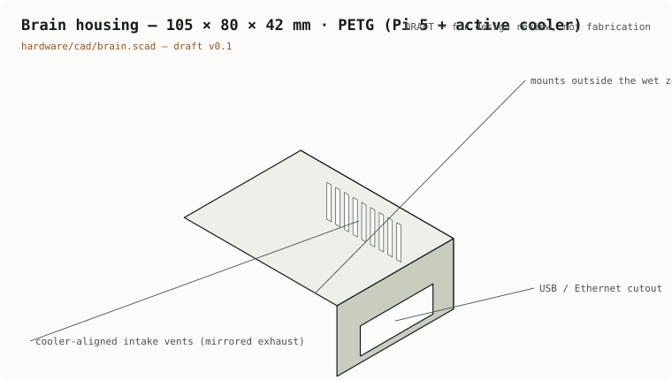
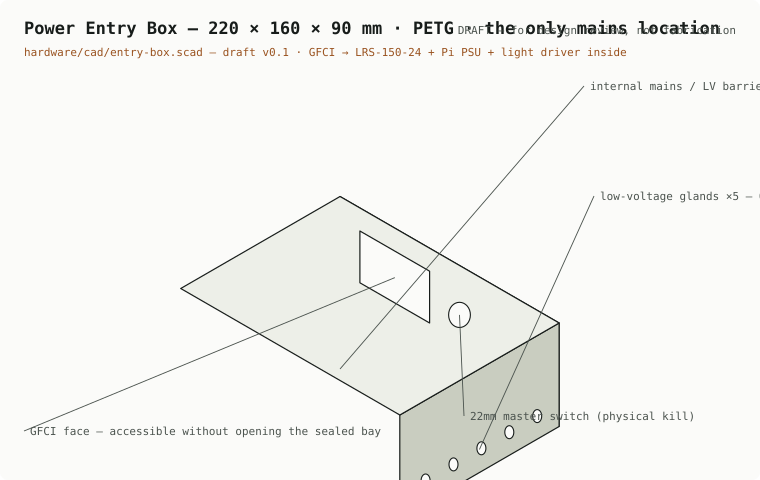

Block-level PCB schematics and parametric CAD for every enclosure we 3D-print. All drafts derive from the ratified v1 hardware design; final schematic capture and duct tuning happen on the bench before anything is fabricated.
The canopy board is a rev-B evolution of an existing KiCad design; the reservoir stays breadboard-first until its behavior is bench-proven, then gets its first PCB spin at pilot volume.

Canopy rev B — ESP32-S3 with camera, five-device I2C sensor bus, dual fan drivers (headers for four), two 0–10V dim stages, mister channel, and the self-locking lift driver with hard limit switches and current-sense stall detection.

Reservoir — ESP32-C3 with precision ADC for pH/EC, an I/O expander for level/leak/valve signals, and five pump channels. Circulation and aeration are never interlocked; only chemical-adding actuators halt on a fault.

Power Entry Box — one wall cord, GFCI-first, and every conductor that leaves the box is ≤24V DC. Certified converters only; our boards never touch mains.
Full KiCad source for the canopy board exists today (v0.2 schematic, 4-layer spec); the rev-B capture shown here is scheduled work with every VERIFY item resolved before fabrication. Sources live in the engineering repo.
Each enclosure is parametric OpenSCAD — the views below are rendered from the printable geometry itself, exploded to show the lid, seals, and interior. Printed in PETG (ASA where it lives near the light's heat). The canopy housing is the interesting one: its aspiration duct is a meteorology-grade sampling channel, so the sensors read the grow zone — not the electronics' own heat.

Canopy — aspirated sensor duct, down-facing ToF / spectral / camera windows, two-point lift suspension bosses, expansion jack.

Reservoir — sloped roof sheds splash, every cable enters from below through a drip loop, probe glands take the shortest path to the water.

Brain — Pi 5 with active cooling, vents aligned to the cooler's airflow, mounted outside the wet zone.

Power Entry Box — sealed mains bay with internal barrier, externally accessible GFCI and master kill switch, low-voltage-only gland row.
Printable geometry: hardware/cad/{canopy, reservoir, brain, entry-box}.scad in the engineering repo — parametric, so wall thickness, gland counts, and duct dimensions tune without remodeling. Injection molding is the design-for-manufacture path once pilot volume justifies tooling.
Frozen (ratified design)Module taxonomy, 24V single-plug power architecture, sensor placement strategy, lift safety mandates, interlock chains.
Draft (this page)Block schematics pending rev-B KiCad capture; housing geometry pending bench duct tuning and fit checks.
Proven already~55 host unit tests over the pure control crates; PID, VPD math, dosing interlocks, and safety failsafes run in CI on every commit.